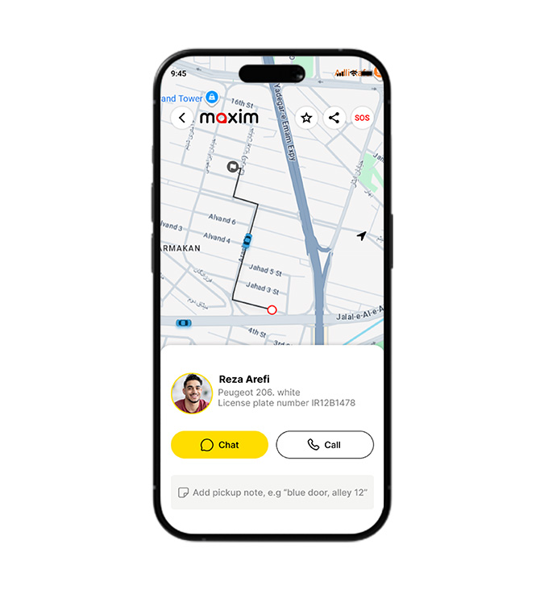
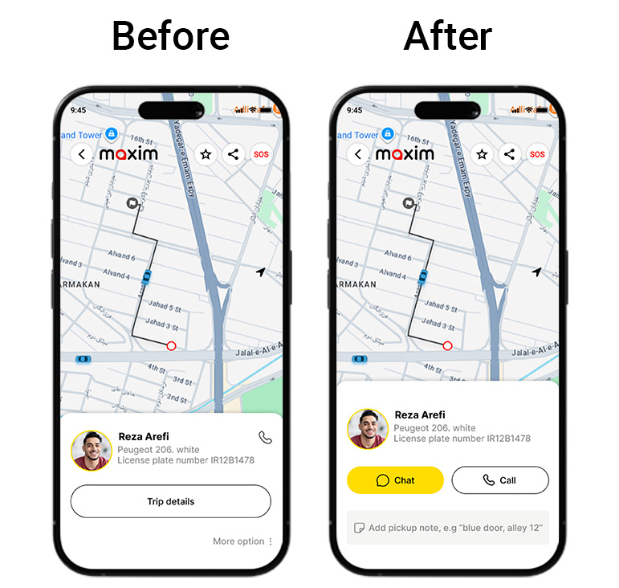

Redesigning the Ride-Hailing Experience
May 2022 – September 2022
Figma
UI/UX Designer

Maxim is an online taxi app used for both in-city and intercity trips. As a UI/UX Designer, I worked on redesigning key ride-hailing interactions to fix friction that came from the gap between Maxim's default Russian app template and how Iranian users actually behave.
When working on the Maxim app in Iran, we faced a unique design problem. The app's core design system and UX patterns came directly from Russia. While the global structure worked fine, it didn't always match how Iranian passengers and drivers actually communicate and use ride-hailing services in daily life.
The biggest gap was around direct communication and trip customization. Iranian users heavily rely on phone calls or clear, immediate text notes for specific pickup instructions (like landmarks or exact alley names), whereas the original UI treated chat and extra notes as secondary features hidden behind menus. This caused confusion, missed rides, and unnecessary cancelled trips.
